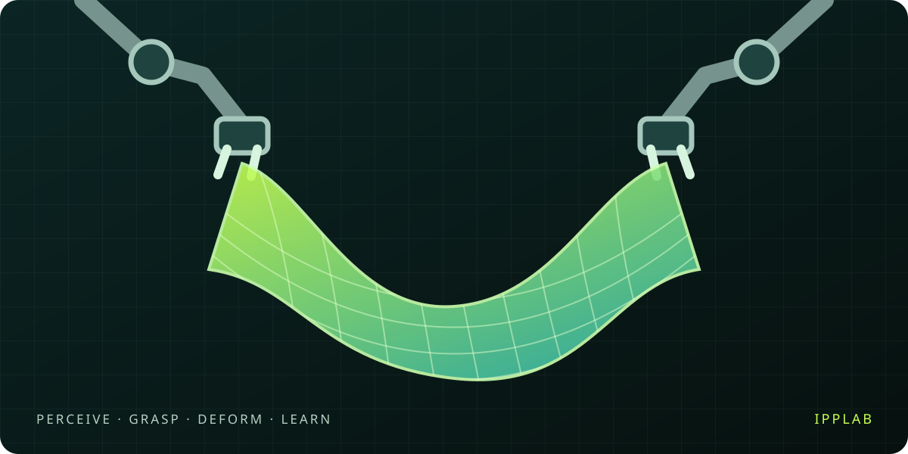

Robot Learning & Manipulation
机器人学习与操作
Hejun Zhang 张和俊
Master’s Student · Peking University
北京大学 · 硕士研究生
I am a master’s student at Peking University. My research interests lie in robot learning and deformable object manipulation, with a focus on simulation, data, and evaluation for reliable manipulation.
我是北京大学的硕士研究生，关注机器人学习与可变形物体操作，希望通过仿真、数据与评测，推动更可靠的机器人操作。
I am interested in how robots can perceive and interact with objects whose shape changes during manipulation, such as cloth and rope. I welcome conversations and collaborations in these areas.
我感兴趣的问题是：面对布料、绳索等在交互中持续改变形状的物体，机器人如何感知其状态并完成操作？欢迎相关方向的交流与合作。
Research Interests研究方向
Deformable Manipulation
可变形物体操作
Perception and control for cloth, garments, and other objects with changing geometry.
面向布料、衣物等形态可变物体的状态感知与操作控制。
Simulation & Robot Data
仿真与机器人数据
Simulation environments and demonstration data for learning manipulation skills.
用于操作技能学习的仿真环境与示范数据。
Evaluation & Generalization
评测与泛化
Understanding policy failures and evaluating reliability across objects and visual conditions.
理解策略的失败原因，评估跨物体与视觉条件的操作可靠性。
Open-source & Resources开源项目与研究资源

Community Resource · IPPLAB
社区研究资源 · IPPLAB
A curated resource collection on deformable object simulation and manipulation, covering simulators, perception and control, policy learning, sim-to-real transfer, and benchmarks. Includes a cloth dataset directory.
整理可变形物体仿真与操作领域的研究资源，涵盖仿真器、感知与控制、策略学习、仿真到真实迁移及评测基准，并提供衣物数据集目录。
Education教育经历
Peking University北京大学M.S. in Computer Science and Technology
计算机科学与技术 · 硕士
2026–2029
Chongqing University重庆大学B.Eng. in Data Science & Big Data Technology
数据科学与大数据技术 · 工学学士
2022–2026